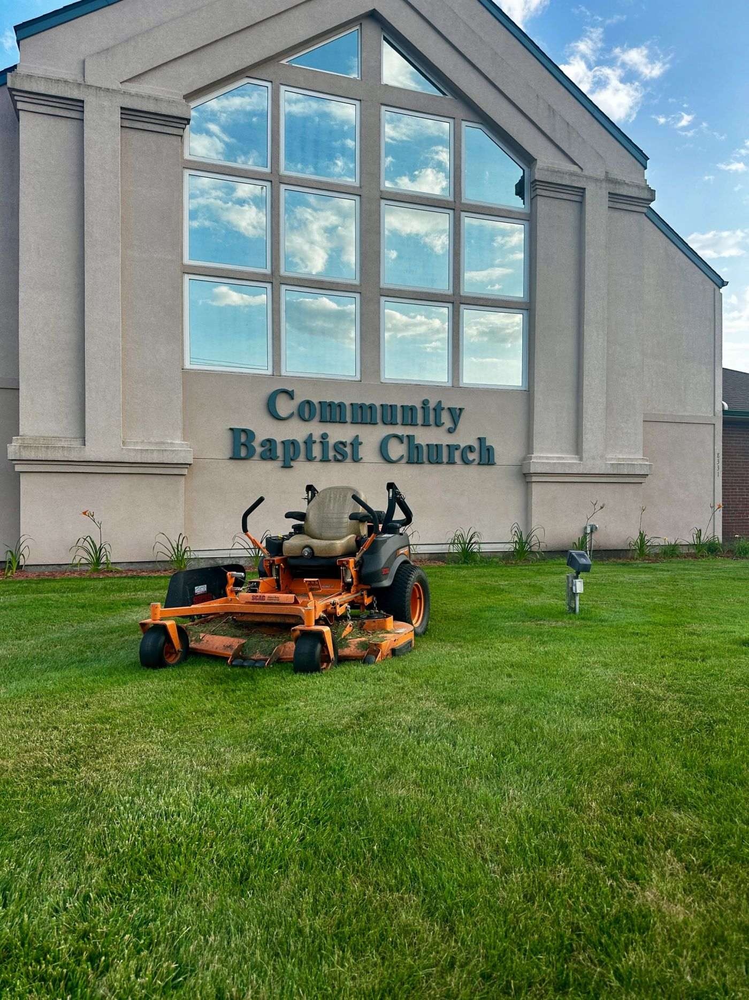
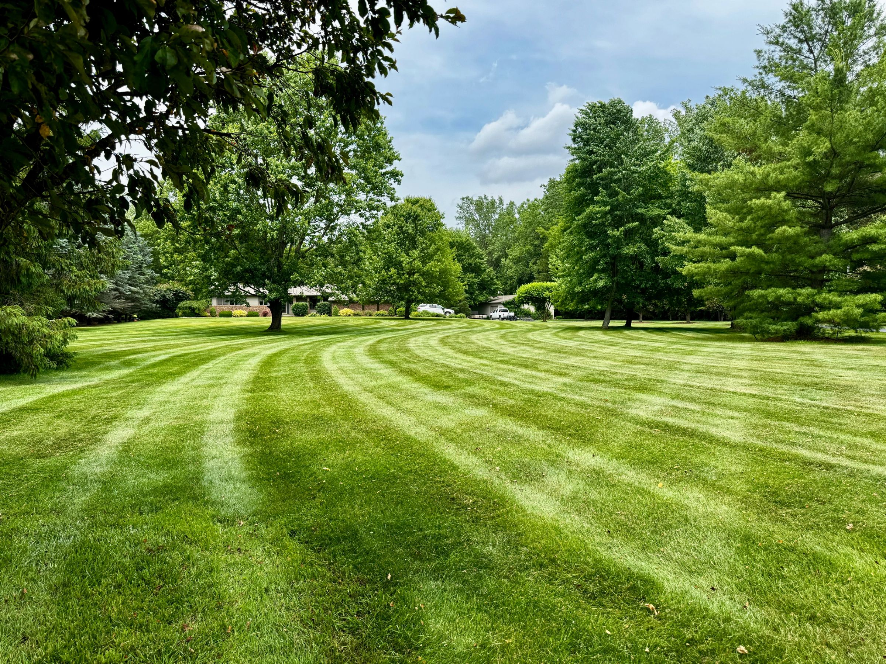
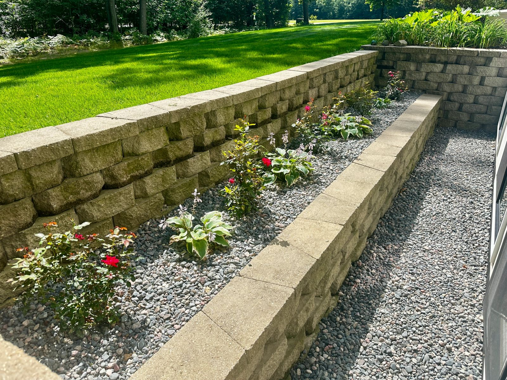
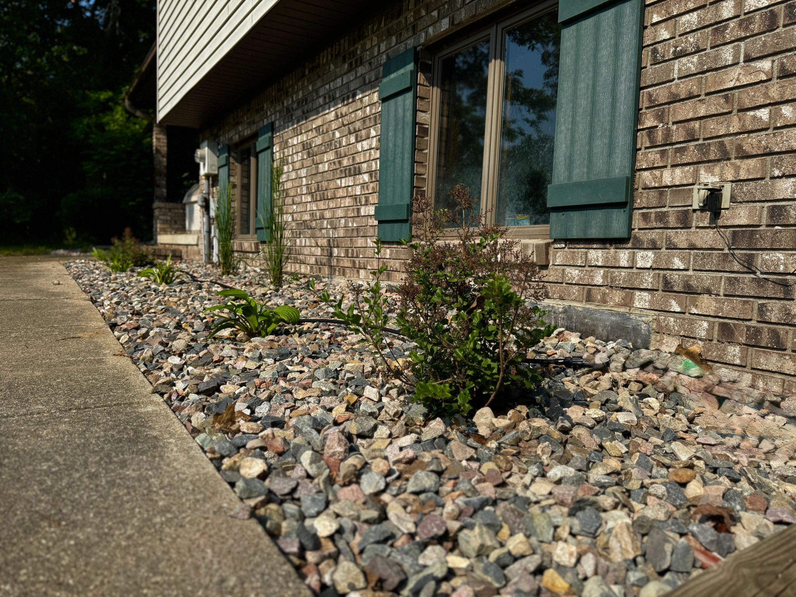
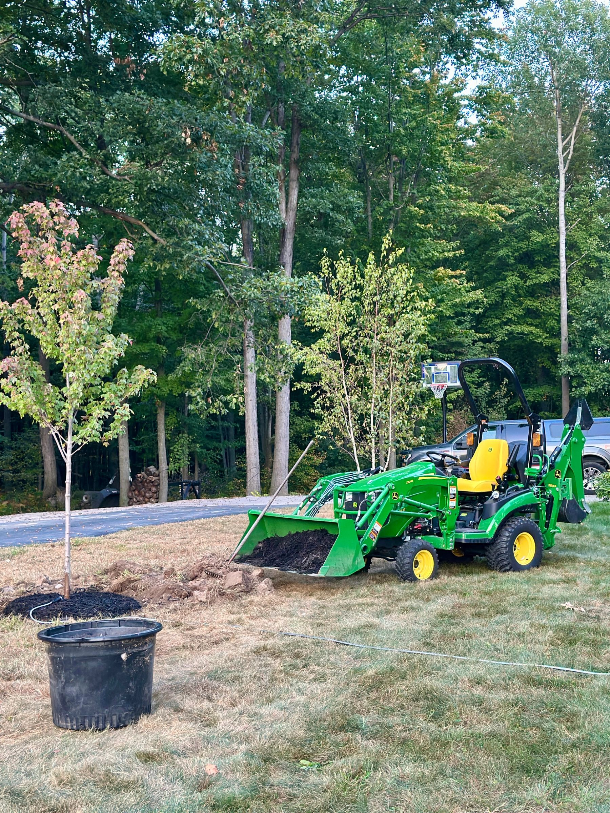
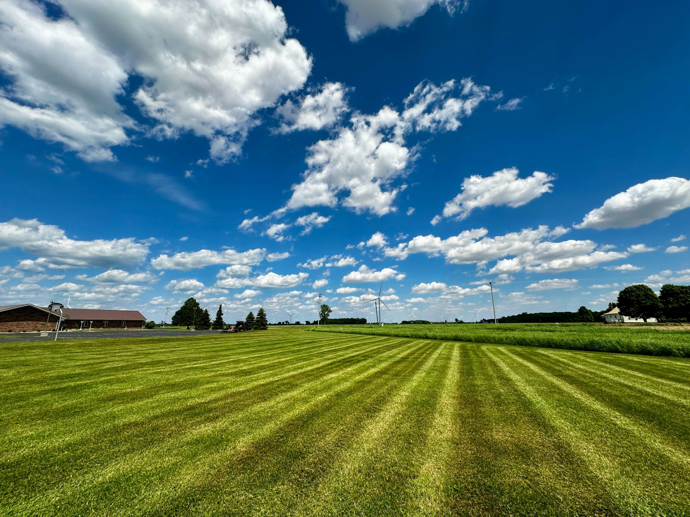

01
Commercial
Commercial
Site Management

Our site management keeps your property vibrant and meticulously maintained throughout the year.
CV Landscaping is the Tri-Cities' trusted provider. We are dedicated to top-quality service, with a focus on excellence and customer satisfaction. Our experienced team delivers reliable solutions for commercial and residential properties alike.
What we do
Most clients start with one and end up on all three.

Our site management keeps your property vibrant and meticulously maintained throughout the year.

Our lawn care keeps your lawn healthy, green and well maintained throughout the year.

Transform your outdoor space. We build beautiful, functional landscapes tailored to your preferences.
Selected work



5.0 · 23 Google reviews
We called 11 different landscapers in the Tri-City area and no one rolls a yard and cuts it. Called Carter and he was happy to accommodate us. We are in Florida right now, and he took care of everything at a very fair price, and communicated with us very well. We would recommend him to anyone.
Mike BalwinskiProfessional and reliable!
Michelle SmithWe’ve been using Carter and his team for about 4 years now. We’ve contracted multiple thousands of dollars of work through them and they never disappoint!
Lowell MetzDid a very good job!
BradenCV Landscaping provided exceptional service, revitalizing our lawn and flower beds. Their work was timely and diligent, and they carefully preserved existing flowers while removing weeds. We will certainly use their services again.
Melanie RachwitzCarter does a great job on our yard. Highly recommend.
Dave WielandFinally…a young man with good work ethic. It may just be mowing, but he takes a lot of pride in doing it well. Well maintained professional equipment.
Kathy MetzReasonable price.
Jordan SummersExcellent lawn care. Very reliable and attentive to detail. The owner has an outstanding work ethic and takes pride in his work. We have had CV Landscaping mow our lawn for the last two years and highly recommend his services.
Jenifer SavageIt was the best lawn service ever!!! And the workers did a great job!
Katelyn BonnerCV Landscaping did a great job managing the lawn service this year. They have the yard looking better than it has in a very long time. They were reliable and did excellent work.
Amanda BSome of the best lines I’ve ever seen. Great service — he showed up with a smiling face, and was very kind.
Carter BettnerGreat company to work with! Excellent customer service and great job all around! I highly recommend them for all your landscaping needs.
Jeremy KuschelHad this company mow my grass just before mother’s day. And to my surprise, because I was a mother, he gave me a great deal. Will definitely have this young man back. He has an amazing attitude.
Victoria KrupnekHigh quality cut. On time and very professional young man! Makes our church yard look fantastic!
Cody BartlettCarter and the CV landscaping team are top notch! Cannot recommend them enough and look forward to following their growth.
Tad DicksQuality work. Carter knows what he’s doing and does his best to make each lawn look their best.
Justin RisingerVery pleased with the work Carter has done. He’s always on time and is very thorough. I highly recommend him.
Jonell DavisCarter is a young man with an exceptional work ethic. He takes pride in his work and will do a great job on your lawn like he has done on ours!
Jenifer SavageEstimates
Send the address and what you need. We will walk it and get back to you with a number.
Hemlock, MI 48626 · Serving the Tri-Cities